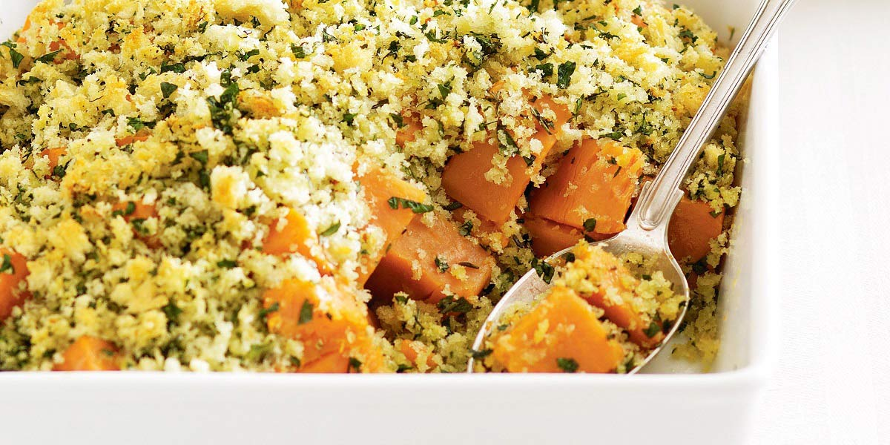

Vegetable Crumble
Recipe Specification
Ingredients List
| Ingredients | Quantity |
|---|---|
| Vegetable Stock | 400ml |
| Celeriac | 450g |
| Carrot | 3x1 |
| Sweet Potatoes | 3x1 |
| Leek | 2x1 |
| Créme Fraiche | 200ml |
| Plain Flour | 50g |
| Wholegrain Mustard | 15g |
| Dried Thyme | 1 tsp |
| Unsalted Butter | 50g |
| Ground Almond | 50g |
| Parmesan Cheese | 50g |
| Flaked Almond | 25g |
| Salt & Pepper | To Taste |
Yield: 6-8 portions
Preparation
- Peel and dice celeriac into 1 inch cubes.
- Peel and dice carrots into 1cm.
- Peel and dice sweet potato into 1 inch cubes.
- Wash and slice leeks.
- Cut butter into small dice.
- Place 50g of plain flour and ground almond in a bowl and work diced butter into it with finger tips. Add flake almond and parmesan cheese to the mixture.
- Mix remaining flour with créme fraiche and whole grain mustard.
- Pre-heat oven to 170’C.
Cooking Instructions
- Place saucepan on a medium/high heat.
- Add stock to the pan, bring to the boil and reduce to the simmer.
- Add celeriac, carrot, sweet potato and leeks to the pan before covering with lid. Cook for 10 minutes.
- Add créme fraiche/flour mix, dried thyme and season with salt and pepper.
- Spoon filling into oven proof dish and top with almond crumble.
- Place tray in the oven for 30-35 minutes.

Serving Suggestions
Serve with a roast potato and steam greens.
Storing instructions
Allow to cool to room temperature. Consume within 4 days of making. Store in the fridge
Reheating Instructions
Portion out and place in the microwave for 2-3 minutes.